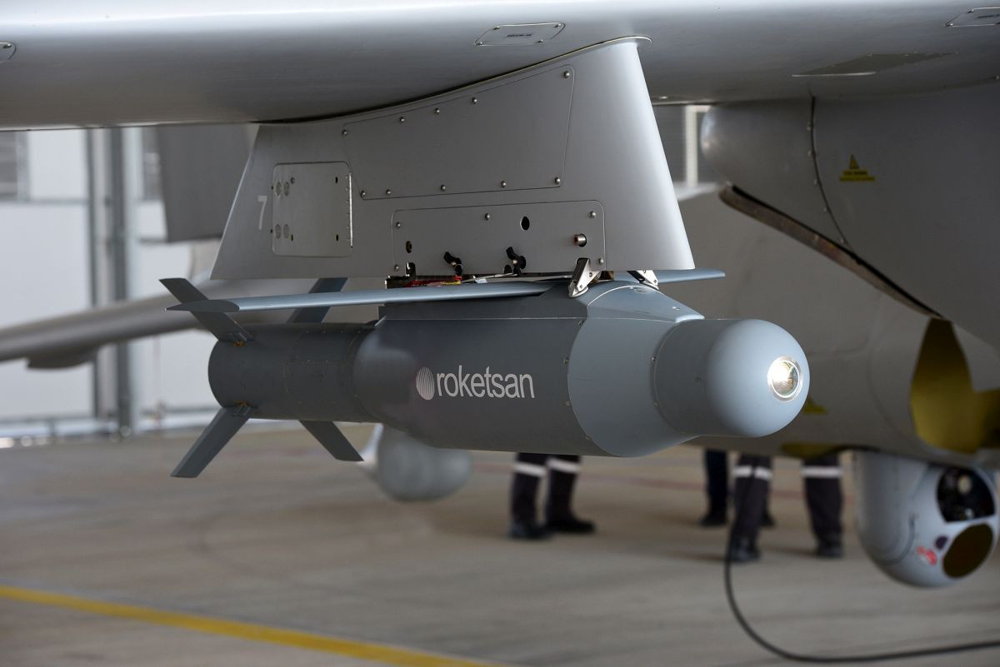
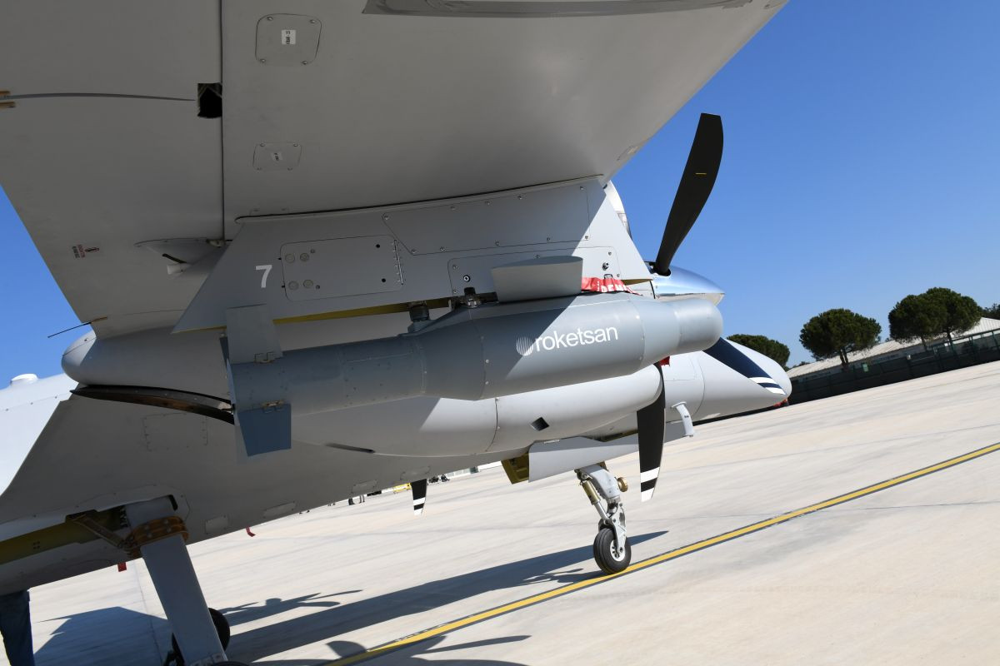
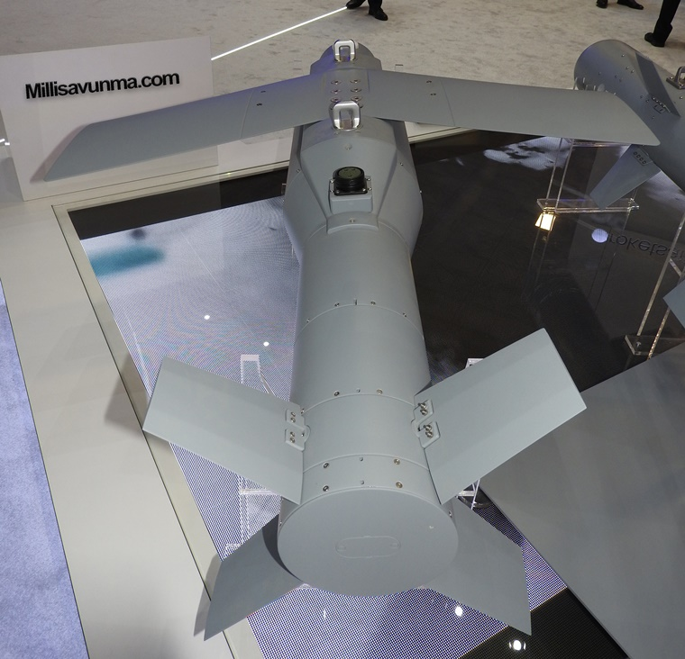

Akıllı Mühimmat
MAM-T, insansız hava araçları ve hafif taarruz uçaklarının kritik hava-yer görevleri için geliştirilen, yüksek yıkım gücüne sahip akıllı mühimmattır.
Sistem; sabit kanat yapısı ve geliştirilmiş harp başlığı sayesinde daha uzun menzillerde, sabit ve hareketli hedeflere karşı yüksek vuruş hassasiyeti ve etkinlik sunar.
MAM-T yalnızca kara hedeflerine karşı değil, resmî katalogta belirtildiği üzere kara veya deniz hedeflerine karşı havadan yere kullanılabilen bir mühimmattır. Bu yönüyle MAM ailesinin daha yüksek etkili ve daha uzun menzilli üyesi olarak öne çıkar.
Değişen operasyon şartlarına göre opsiyonel yaklaşma sensörü ve GPS konfigürasyonu ile farklı görev ihtiyaçlarına uyarlanabilir. Alternatif harp başlığı seçenekleri de sistemi çok amaçlı bir hassas taarruz mühimmatı haline getirir.
30+ km
1.8 m
230 mm
94 kg
Lazer Arayıcı Başlık
AP / HE-FRAG / Termobarik
| Sistem Tipi | Akıllı mühimmat / yarı aktif lazer güdümlü hava-yer mühimmatı |
| Adı | MAM-T |
| Üretici | ROKETSAN |
| Görev Alanı | Hava-yer görevlerinde kara veya deniz hedeflerine hassas angajman |
| Menzil | 30+ km |
| Uzunluk | 1.8 m |
| Çap | 230 mm |
| Ağırlık | 94 kg |
| Arayıcı Başlık | Lazer arayıcı başlık / semi-active laser seeker |
| Güdüm | Yarı aktif lazer güdüm |
| Harp Başlığı Seçenekleri | Zırh delici, yüksek infilaklı parçacık etkili, termobarik |
| Opsiyonel Konfigürasyon | Yaklaşma sensörü / GPS |
| Kullanım Türü | Air-to-ground / havadan yere görevler |
| Hedef Profili | Sabit ve hareketli hedefler |
| Platformlar | İHA’lar, hafif taarruz uçakları |
| Öne Çıkan Özellik | MAM ailesinde daha yüksek yıkım gücü ve daha uzun menzil sunan yerli hassas mühimmat |
| Uzun Menzilli Hassas Taarruz | 30 km üzeri sınıfta sabit ve hareketli hedeflere angajman |
| Yüksek Yıkım Gücü | MAM ailesinin daha ağır ve daha etkili vurucu yapıdaki üyesi |
| Kara ve Deniz Hedeflerine Angajman | Resmî katalogta belirtilen kara veya deniz hedeflerine karşı kullanım |
| Çoklu Atım | Multi-shot feature ile aynı platformdan ardışık kullanım |
| Yaklaşma Sensörü Seçeneği | Hedef üzerinde istenilen noktada aktivasyon kabiliyeti sağlayan opsiyonel yapı |
| Koordinata Atış | Opsiyonel GPS konfigürasyonu ile belirli koordinata atış |
| Görev Esnekliği | Farklı harp başlıkları ile farklı görev profillerine uyarlanabilir kullanım |
| Hafif Platform Etkinliği | İHA ve hafif taarruz uçağından daha uzak mesafede etkili akıllı mühimmat kullanımı |
| Sabit Hedefler | İşaretlenmiş sabit kara veya yüzey hedefleri |
| Hareketli Hedefler | Lazer işaretleme ile takip edilen hareketli hedefler |
| Kara Hedefleri | Zırhlı veya yumuşak kara hedefleri |
| Deniz Hedefleri | Yüzey hedeflerine karşı kullanım |
| Ana Muharebe Tankları | Zırh delici başlıkla uygun ağır zırhlı hedefler |
| Kapalı / Yarı Kapalı Alan Hedefleri | Termobarik başlık seçeneğiyle uygun görevler |
| Alan Hedefleri | Yüksek infilaklı parçacık etkili başlıkla uygun hedefler |
| İHA / SİHA | MAM-T’nin temel kullanım alanlarından biri |
| Hafif Taarruz Uçakları | Resmî ürün sayfasında açıkça belirtilen platform sınıfı |
| Kullanım Konsepti | Daha yüksek etkili, daha uzun menzilli hassas hava-yer mühimmatı |
| Aile İçindeki Yeri | MAM-C ve MAM-L’ye göre daha büyük, daha ağır ve daha yüksek yıkım gücüne sahip üye |
| Taktik Avantaj | İHA ve hafif hava platformlarına daha uzun menzilde ağır vurucu güç kazandırması |
| Görev Esnekliği | Farklı başlık ve opsiyonel sensör/GPS seçenekleri ile uyarlanabilir kullanım |


